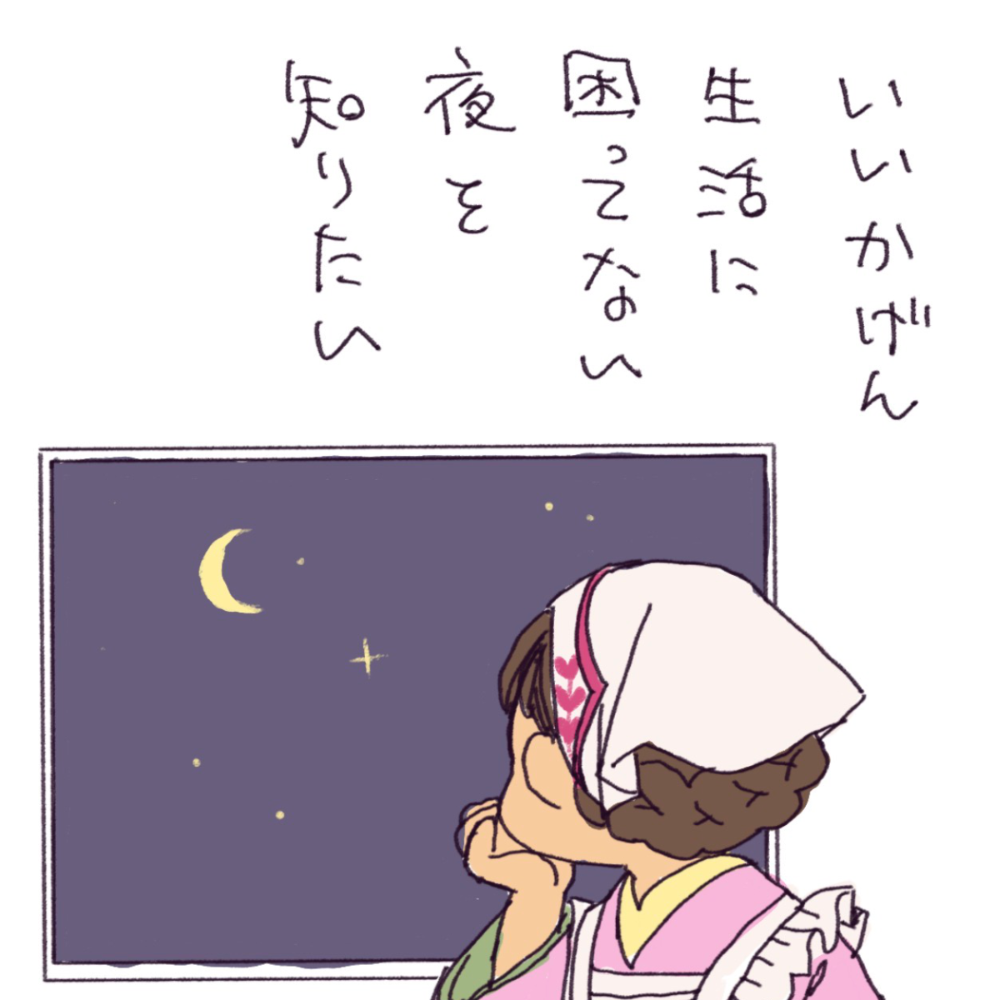
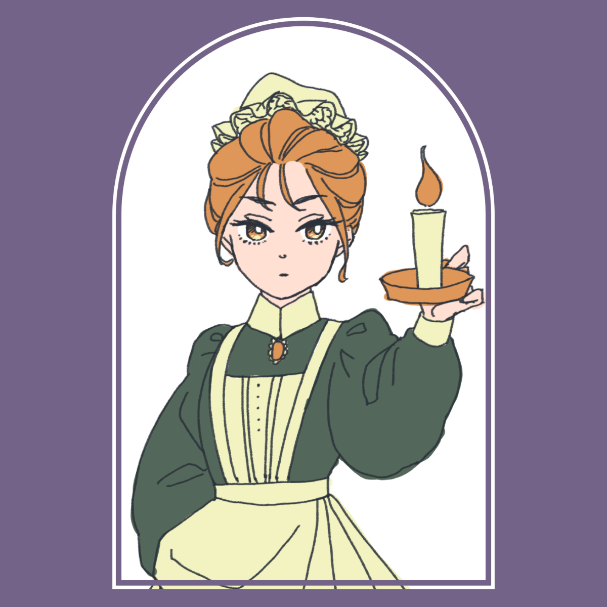
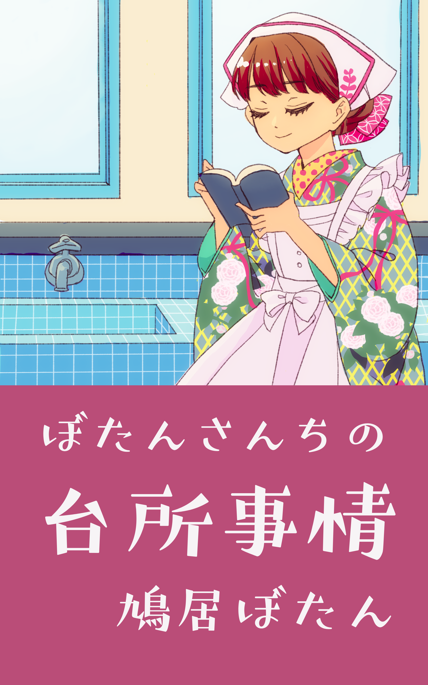

ぼたんさんのお言葉
火曜とか金曜とかにネタがあれば公開。
ぼたんさんのためにならないお言葉と5分でかいたらくがきのシリーズ。
ぼたんさんの「はなくそワーク（はなくそほじりながらできる仕事）」代表。
Twitterで見るWorks
育てている企画と作品の案内板です。

火曜とか金曜とかにネタがあれば公開。
ぼたんさんのためにならないお言葉と5分でかいたらくがきのシリーズ。
ぼたんさんの「はなくそワーク（はなくそほじりながらできる仕事）」代表。
Twitterで見る
毎週土曜にInstagramで週間占い公開中。
その他、カレンダー企画やメイドさんのお言葉カード企画など進行中。
Instagramで見る「架空のヒストリカル衣装Vtuber事務所」をテーマに毎月新規デザイン公開予定。
いまがんばってかいてるから告知待ってて。
制作状況を見に行く
「生きると暮らしのDIY」がテーマ。
2026年6月23日販売URL公開「わからない」「知性」がテーマ。
7月下旬発売予定「労働」「尊厳」「祈り」がテーマ。
8月下旬発売予定